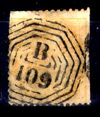
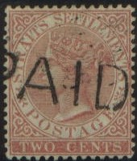
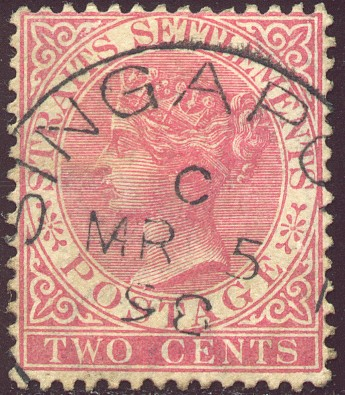
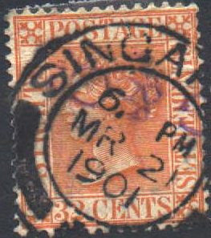
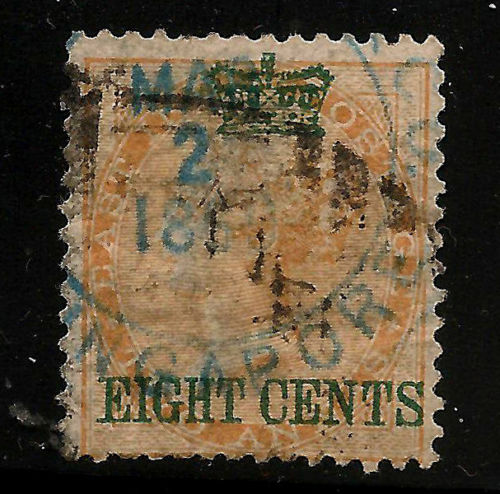
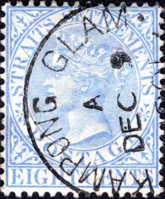
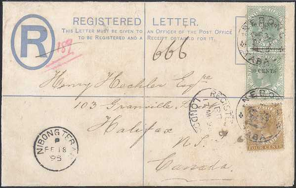
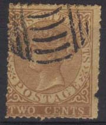

(Singapore 'B172' cancel)
Return To Catalogue - Straits Settlements 1867 issue - Straits Settlements 1868-1901- Straits Settlements firm chops on early stamps, A-K - Straits Settlements firm chops on early stamps, L-Z
Note: on my website many of the
pictures can not be seen! They are of course present in the cd's;
contact me if you want to purchase them.
Some cancels from the Indian period were used on the first issue of Straits Settlements examples are "B172" (Singapore), "B109" (Malacca) and B147 (Penang). These cancels can still be found up to at least 1883; source: The Postage Stamps of The Straits Settlements by R.H.D. Lockhart (1925).
(Singapore 'B172' cancel)
('B172' Singapore cancel on the left)

"B172" cancel of Singapore, yet with an additional
"MALACCA" cancel!
So-called 'duplex' cancel:
(147 Penang on India stamps and on first issue of Straits
Settlements)
Duplex cancels for the Straits Settlements consists of a diamond with a number in the center (147 for Penang and 172 for Singapore). There are two small lines connecting the circle and the diamond. Malacca did not use this canceltype.
Singapore "D14" cancel (a similar cancel "D17" exists for Penang):
"D14 SINGAPORE" duplex cancel.
"D17" Penang cancel
"PAID" in a straight line:

A similar "PAID" cancel in red was used in Selangor.
A red "PAID" cancel with an additional "D14"
cancel.
Cancel of Singapore, originally used from 1855 to 1868, but now with the date indication removed (since it had become unreadable due to wear), after a while the letters themselves also became unreadable. As such it was used from 1883 to 1889:
Mute cancels, consisting of dots:

Mute cancels, circle consisting of parallel bars
Cancel as could have been used in Perak or Sungei Ujong:
Other mute cancel, consisting of an ellipse with bars:
Circular date cancel:
"KLANG" cancel
Kwala Lumpur cancel and Kuala Lumpur.
Malacca in red and black
Port Dickson in violet
"LUMUT" and "SUNGEI BESI"
 
Singapore cancels in different styles and sizes

I believe this to be a firmchop of "BEHN MEYER & Co
SINGAPORE"
"SINGAPORE" in a circle, bottom part filled up with
dots. If my information is correct, this cancel was used in
1890-1891.
'PENANG' in a circle:

"KAMPONG GLAM SINGAPORE" cancel
"SOUTH BRIDGE ROAD SINGAPORE"
"TANGLIN" (Singapore)
"TANJONG PAGAR" (Singapore)
"TELUK ANSON" (nowadays Teluk Intan, Perak, Malaysia)
"NEW HARBOUR SINGAPORE" (nowadays known as Keppel
Harbour)
"SERENDAH"?
"PAHANG"
"ULU PAHANG P.O." cancel without and with date in the
center.
Part of a large red 'HONGKONG' cancel. I do not know where this
cancel was used for.
Large red "STAMPED" in a straight line.
Stamp with manual 'Stamped' written on it. Apparently used to tie
the stamp to the envelope (to avoid theft). I've seen similar
manual 'Stamped' stamps from India.
Cancels that I have not been able to identify:
Special cancel: crown with "NEBONG TABAL":

It seems that the postmaster of this town lost his cancelling device and made this one instead (according to 'Straits Settlements Postage Stamps' by F.E. Wood, p74). This cancel was made in 1894(?). Note that the cancel in the left lower corner reads "NIBONG TEBAL".
German maritime cancel "DEUTSCHE SEEPOST OST ASIATISCHE
HAUPTLINIE".
Cancel of Netherlands Indies on Straits Settlements stamp (5 c blue), number in a diamond of dots, here '5': Padang and some other stamps with cancels '35', '56' and '89':
Netherlands Indies cancel "TANDJONGPRIOK" and
"TANDJONGPOERA"
Ceylon "A" cancel on a Straits Settlements stamp.

{kind=link}
{kind=link}
{kind=link}
{kind=link}
{kind=link}
{kind=link}
{kind=link}